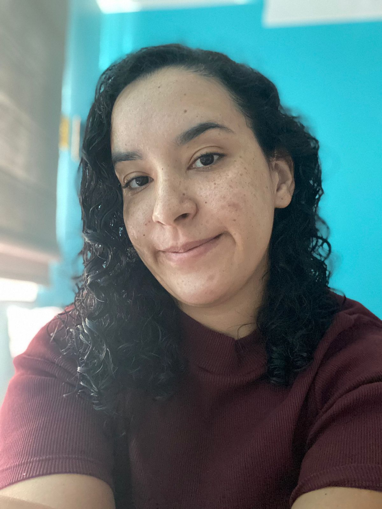
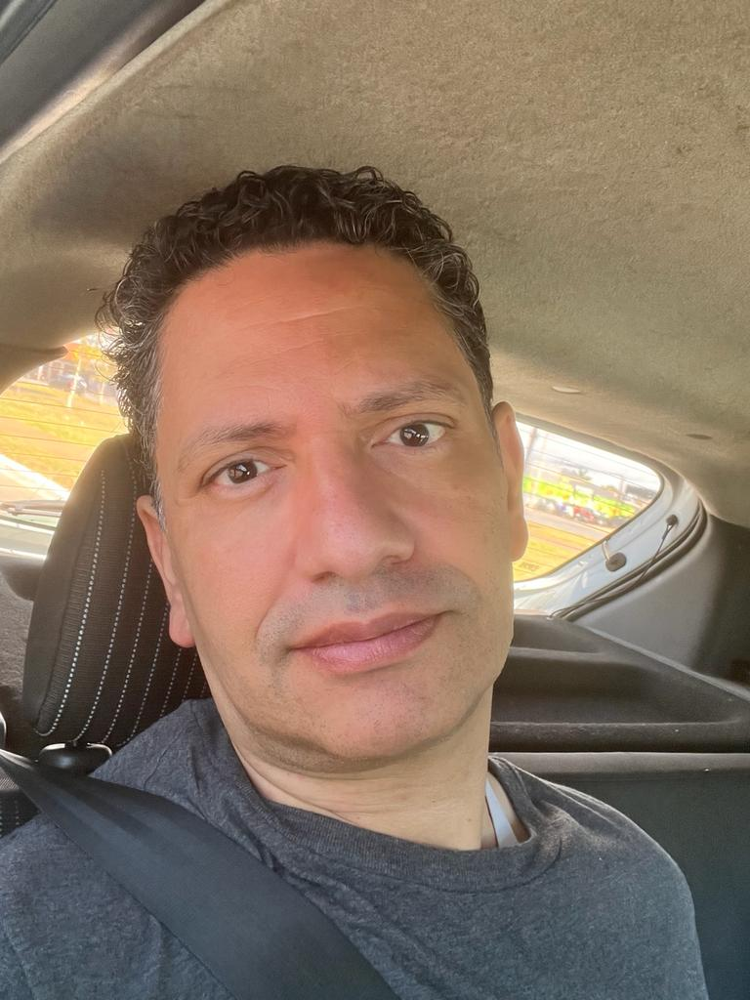

Savoir Plus
References, participants et plus

References
BRASIL. Lei Nº 9.394, de 20 de dezembro de 1996. Dispõe sobre as diretrizes e bases da educação nacional. (Brasília, DF: Diário Oficial da União), 1996.
BRASIL. Lei Nº 11.645, de 10 de março de 2008. Dispõe sobre a obrigatoriedade da inclusão da temática “História e Cultura Afro-Brasileira e Indígena” no currículo oficial da rede de ensino. (Brasília, DF: Diário Oficial da União), 2008.
BRASIL. Lei Nº 10.436, de 24 de abril de 2002. Dispõe sobre a Língua Brasileira de Sinais - Libras e dá outras providências. (Brasília, DF: Diário Oficial da União), 2002.
BRASIL. Decreto Nº 5.626, de 22 de dezembro de 2005. Regulamenta a Lei nº 10.436, de 24 de abril de 2002, que dispõe sobre a Língua Brasileira de Sinais - Libras, e o art. 18 da Lei nº 10.098, de 19 de dezembro de 2000. (Brasília, DF: Diário Oficial da União), 2005.
HIGA, Juliana Yukari. Uma análise do cenário cultural, identitário e linguístico okinawano em Brasília, 2022. 63 f., il. Trabalho de Conclusão de Curso (Licenciatura em Língua Japonesa) - Universidade de Brasília, Brasília, 2022.
TOMA, Priscila Miki Cortez. Entre Okinawa e Ryukyu: as consequências de um duplo colonialismo. 2022. 29 f. Trabalho de Conclusão de Curso (Graduação em Relações Internacionais) - Universidade Federal de Uberlândia, Uberlândia, 2022.
https://www.bbc.com/portuguese/brasil-42775209#:~:text=%C3%89%20que%20no%20Brasil%20a,a%20cultura%20para%20seus%20descendentes. Acesso em: 16/11/2023.
https://www1.folha.uol.com.br/fsp/turismo/fx0805200808.htm.
Acesso em: 18/11/2023.
Informations Complémentaires
GARCIA, Marcus Vinícius. A diversidade linguística como patrimônio cultural. Ipea, 2014. Disponível em: https://www.ipea.gov.br/desafios/index.php?option=com_content&view=article&id=3053&catid=28&Itemid=39 . Acesso em: 18 de nov. de 2023.
Inventário Nacional da Diversidade Linguística (INDL). IPHAN, c2014. Disponível em: http://portal.iphan.gov.br/pagina/detalhes/140 . Acesso em: 18 de nov. de 2023.
BOLSON, Bibiana. Dialeto de imigrantes italianos se torna patrimônio brasileiro. G1, Rio Grande do Sul, 20 de nov. de 2014. Disponível em: https://g1.globo.com/jornal-hoje/noticia/2014/11/dialeto-de-imigrantes-italianos-se-torna-patrimonio-brasileiro.html . Acesso 18 de nov. de 2023.
EBEL, Daniele. Pomerano: uma língua brasileira. Tesouro Linguístico, 6 de dez. de 2019. Disponível em: https://wp.ufpel.edu.br/tesouro-linguistico/2019/12/06/pomerano-uma-lingua-brasileira/ . Acesso 18 de nov. de 2023.
Três línguas são reconhecidas pelo Iphan como Referência Cultural Brasileira. IPHAN, 19 de nov. de 2014. Disponível em: http://portal.iphan.gov.br/noticias/detalhes/114/#:~:text=Talian%2C%20Asurini%20do%20Trocar%C3%A1%20e. Acesso 18 de nov. de 2023.
Crédits
João Victor Lemos Cordeiro de Souza
Développeur du site web, responsable du contenu des rubriques "Okinawa" et "Langues", traducteur et réviseur du français.
Laura Estephania Baptista Pereira De Mello
Responsable du contenu "Okinawa", traductrice et réviseuse du français.
Marcelo Rodrigues da Costa
Responsable des contenus "À propos" et "Droits linguistiques au Brésil", traducteur et relecteur en espagnol.
Rebeca Sadraque Mangueira
Responsable du contenu "Qu'est-ce que sont les droits linguistiques ?", traductrice et réviseuse d'anglais.

Thayssa Christiane Pereira
Responsable du contenu "Qu'est-ce que sont les droits linguistiques ?", traductrice et réviseuse d'anglais.